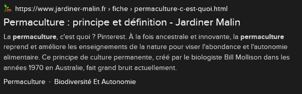
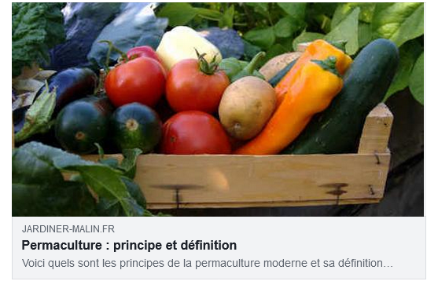

Le SEO correspond à l'optimisation du moteur de recherche.On souhaite tous voir notre site internet se retrouver en haut de la liste lors d'une recherche de l'utilisateur sur le web.
Les mots présents dans la balise title vont permettre de référencer la page (même si ils ne sont pas tous visible sur l'onglet). La balise "title" correspond à la foi au texte affcihé dans l'onglet du navigateur mais également au titre de l'onglet dans les résultats renvoyé par le navigateur. Il est dont tres important de bien renseigner cette balise.
Ici on écrit un résumer du site ou de la page en prenant soin d'utiliser les mts cléfs prédéfinit en amont.
Les balises open graph présent dans l'entete du fichier HTMl servent à être plus visible sur les réseaux sociaux. Lorsque l'on partage un lien du site dans un réseaux sociaux grâce aux balises open graph prédefinit une card apparait avec le titre, la description et l'image.
Retrouvez les balises Open Graph  Testez son open graph sur facebookLe "h1" est sans aucun doute la balise la plus importante de notre site
Il doit être le plus haut possible et dire de quoi on parle.
Respecter l'ordre des titres. Il ne peut pas y avoir de titre de niveau 3 si il n'existe pas de de titre de niveau 2.
Le paragraphe aide le robot à comprendre le contenu.
Le robot de google aime que dans les paragraphes des informations soit mise en évidence. On met en evidence des informations à l'aide de la balise "strong". Il faut que ses informations soient pertinentes.
Le robot de google aime également la mise de contenu en italique. La mise en italique s'effectue grâce aux balises "em".
Il faut obligatoirement compléter l'attribut "alt" de la balise img. L'attribut "alt" n'as aucune limite en taille. Plus il est complet plus le robot de google vas comprendre et définir le site comme accessible au plus grand nombre.
L'image doit être optimisée dans sa taille et son format. Privilégier le webP. Disponible sur photosphop notamment.
L'image ne doit pas dépasser de son contenant.
Le robot de Google aime que les choses soit locale. Il faut préciser son adresse sa région. Et si le site est à destination uniquement francaise privilégier le .fr au .com
Le fichier robot.txt permet de communiquer avec le robot de Google sur cette page. On peut surtout lui indiquer de ne pas référencer certaines pages de notre site internet.
doc robots.txtLe robot de Google teste le temps de chargement
L'extension genère un raport et nous informe des choses à améliorer sur les performances mais également sur le SEO.
Tester la performance et le SEO de notre site.Il est important de savoir que faire un seo efficace prend 3 à 6 mois. Et est un travail quotidiens.
Pour finir il faut pensez à partager son site le plus souvent possible et le maintenir à jours.